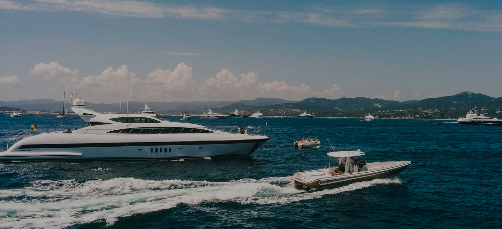
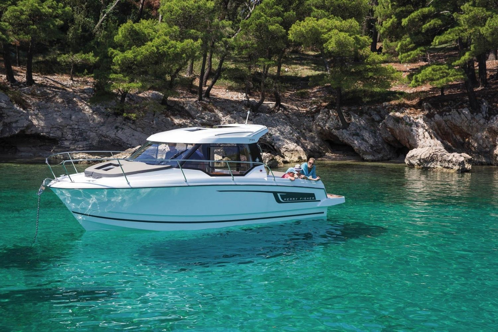
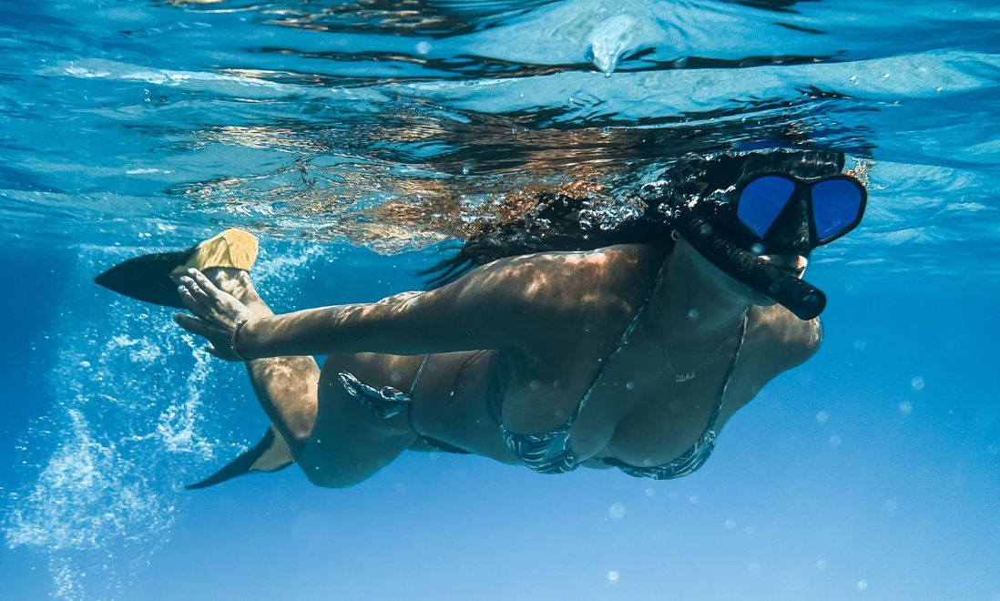
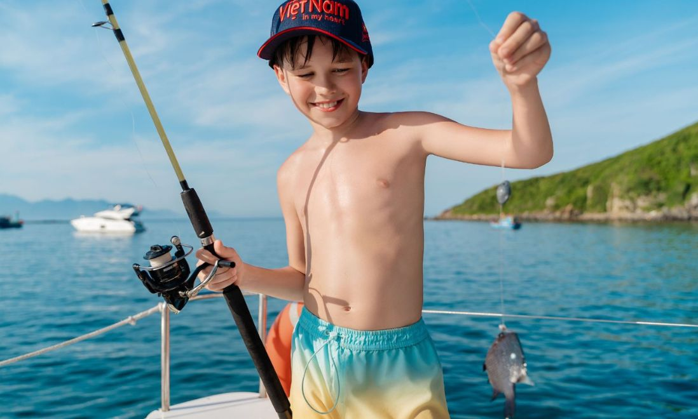

Sunrise Charter · 9:00–14:00
Crystal-clear morning, calm water ☀️
Calm sea and soft sun: the best time for snorkeling, SUP and lunch on deck.


Charter a whole sailing catamaran or Princess yacht for 5–42 people. Chill on deck, snorkel, paddle a SUP, chase the sunset 🌅 — hotel transfers & food and drinks are already in the package.
Weather data: Open-Meteo · For reference only — the captain decides the route based on actual conditions.

Videos from the Leo Yacht Tour VN channel. Hit play to watch — every view counts for the channel. Nothing autoplays.
With a private charter you pay per boat, not per person: the whole yacht is reserved for your group. We help you pick the right boat, hold your date and handle all the back-and-forth with the Theia Yachting team for you.
We are an authorised booking partner (reseller) of Theia Yachting. The yachts and onboard service are operated by Theia; photos, specs and prices come from theiayachting.com.
 Phu Quoc
Phu QuocSailing Catamaran 1360 – Coral II is a spacious catamaran built for private charters around the waters of Phu Quoc.
Phu QuocLuxury Sailing Catamaran 1580 – Onyx delivers a super comfortable private charter around Phu Quoc, with generous space, modern design and attentive service for a fully relaxing day at sea.
Phu QuocLagoon 450 F – Azure is a spacious, elegant sailing catamaran made for private cruises around Phu Quoc.

Nha TrangMotor Yacht Merry Fisher 795 – Jade is a great fit if you love small, private trips and want to enjoy a day at sea in the most relaxed way.
 Nha Trang
Nha TrangTitan is a roomy speed yacht designed for comfortable sea days and fast island hopping in Vietnam.
 Nha Trang
Nha TrangA 13.6-metre premium catamaran designed for anyone after privacy, comfort and truly relaxing moments at sea.
Nha TrangLuxury Sailing Catamaran 1460 – Blue offers a premium private charter in Nha Trang, combining stylish design, modern technology and the comfort of a high-end catamaran.
 Nha Trang
Nha TrangLuxury Motor Yacht V40 – Pearl is ideal if you want a day at sea in a private, comfortable and refined space.
 Nha Trang
Nha TrangSailing Catamaran 1160 Lite – Silver is the perfect pick for a relaxing day at sea in a private, upscale setting.
 Nha Trang
Nha TrangPrincess 56 – Diamond is a spacious flybridge motor yacht, perfect for private charters in Nha Trang, easy days at sea with family and friends, celebrations and private events.
Listed prices in USD from theiayachting.com as of 20/11/2026, for a 5-hour half-day trip, per whole yacht (not per person). Full-day (10 h) prices and VND quotes: contact us.
Calm sea and soft sun: the best time for snorkeling, SUP and lunch on deck.
Head out in the afternoon, swim when the sun softens and watch the sunset from the bow nets.

More time for small islands, water activities and long meals with your people.

Coral II and Onyx (Phu Quoc) include fireworks for evening tours.

Proposals, birthdays, company events — Theia designs the itinerary around your group.
Activities Theia Yachting runs on board. Snorkeling, SUP and fishing are included on most boats.

Snorkeling Jet ski
Jet ski
Fishing Scuba diving
Scuba diving Inflatable water slide
Inflatable water slide Water bike
Water bike SUP paddleboarding
SUP paddleboarding Sea jumping
Sea jumping Towable tube
Towable tubeJet ski, scuba diving, towable tube… may be add-ons — fees confirmed at booking.
Prices are per yacht, never shared with strangers. We send the final quote and terms in writing before you pay a deposit.
From the 5-guest Merry Fisher to the 42-guest Onyx catamaran: sailing catamarans, Princess yachts and a speed yacht.
Hotel transfers, food and drinks, fruit, towels, SUP, snorkeling and fishing gear — on most boats.
We match the boat to your group size and occasion and help from your first question until you step on board.

— Theia Yachting
Sailing catamaran 1360 – Coral II, sailing catamaran 1580 – Onyx, Catamaran Lagoon 450F – Azure. The departure point depends on the yacht and experience — confirmed when you book. Theia office: Meyhomes Capital, 42 Hai Duong Street, Phu Quoc, An Giang Province.
View map →
Departs from Ana Marina Nha Trang, 01 Nguyen Co Thach Street, Bac Nha Trang Ward, Khanh Hoa Province — Theia Yachting's headquarters.
View map →We don't post fake reviews. Public reviews from guests who sailed with Theia Yachting are on Theia's official site.
From 15:00 to 20:00 — a Sunset Charter on the 1360 – Coral II catamaran: wind, water, dinner on deck and the evening fireworks.

Four questions to help you choose among Theia Yachting's 10 yachts: how many people, where, what kind of feeling and what budget.

A compact checklist for a 5- or 10-hour yacht trip: what Theia already provides and what you should bring yourself.
Answers based on information published by Theia Yachting. Items labelled To be confirmed with the agent are general info — we confirm the details when you book.
Pick the Sunset Charter 15:00–20:00 (5 hours): sail out in the afternoon, swim when the sun softens and watch the sunset from the bow nets. Phu Quoc currently has 3 yachts: Coral II (up to 28 guests, $1490 / 5 h), Onyx (up to 42 guests, $1590 / 5 h) and Lagoon 450F – Azure (up to 15 guests, $2690 / 5 h). Coral II and Onyx include fireworks for evening tours.
The yachts on this site are operated by Theia Yachting (theiayachting.com). We are Theia's booking partner: we advise you, hold your date and support you on WhatsApp. The trip, captain and crew are Theia Yachting's responsibility.
Theia offers private yacht charters and group cruises. Choose a 5-hour trip, a full-day private charter or a custom itinerary. The fleet includes sailing catamarans and motor yachts — from trips for couples to parties and events for big groups.
Popular time slots according to Theia:
Schedules can be adjusted depending on the yacht, the weather and your wishes.
Private charter prices are per yacht, not per person. The whole boat is reserved for your group, no strangers. Current listed prices (half day, 5 hours) range from $590 (Merry Fisher 795 – Jade) to $2990 (Princess 56 – Diamond). For full-day prices and VND quotes, message us for an exact quote.
It depends on the yacht, but most trips include:
Some boats also have an inflatable slide, water bikes, fireworks for evening tours (Coral II, Onyx) or a private chef on board (Lagoon 450F – Azure). See “Included” on each yacht's page.
Theia runs trips in Nha Trang and Phu Quoc. In Nha Trang, boats depart from Ana Marina Nha Trang (01 Nguyen Co Thach, Bac Nha Trang Ward, Khanh Hoa). In Phu Quoc, the departure point depends on the yacht and experience you choose — we'll confirm it when your booking is confirmed.
There are currently 3 yachts in Phu Quoc: Sailing Catamaran 1360 – Coral II (up to 28 guests, $1490 / 5 h), Sailing Catamaran 1580 – Onyx (up to 42 guests, $1590 / 5 h) and Catamaran Lagoon 450F – Azure (up to 15 guests, $2690 / 5 h).
It depends on the boat: the smallest is the Merry Fisher 795 – Jade (up to 5 guests), the largest on the current list is Onyx (up to 42 guests). Theia says its fleet serves groups of 1 to 48 guests. Tell us your group size and occasion and we'll suggest the right boat.
Fill in the “Book a yacht” form or message us on WhatsApp with your preferred date, number of guests, time slot (morning / sunset / full day) and the yacht you like. We check availability with Theia and send a confirmation with payment instructions.
Theia's privacy policy mentions card payments via the OnePay gateway. Deposit amount, bank transfer details and payment deadlines are provided when your booking is confirmed.
General info — to be confirmed with Theia before booking
Theia says itineraries may be adjusted to weather conditions. Specific cancellation, rescheduling and refund policies are not published on its website — please ask us before paying a deposit so you get the terms in writing.
General info — to be confirmed with Theia before booking
Yes. Theia recommends larger boats like Coral II and Onyx for birthdays, weddings and corporate events; Princess 56 – Diamond and Princess V40 – Pearl offer customisable food and drink menus. Decorations, cake, photography… let us know in advance for a separate quote.
General info — to be confirmed with Theia before booking
Trips are family-friendly (Theia recommends many boats for “families and groups of friends”). The Titan speed yacht lists life jackets as included; for other boats, please confirm kids' life jackets when booking. Non-swimmers can still relax on deck.
General info — to be confirmed with Theia before booking
Theia lists these activities: snorkeling, jet ski, fishing, scuba diving, inflatable water slide, water bike, SUP, sea jumping and towable tube. Snorkeling, SUP and fishing are included on most boats; jet ski, scuba diving and the towable tube are usually add-ons — exact fees to be confirmed.
General info — to be confirmed with Theia before booking
General tip: twin-hull catamarans (Coral, Coral II, Blue, Silver, Onyx, Azure) are described by Theia as having a “stable twin-hull design”, usually smoother at anchor. Choose a morning slot, eat light before the trip and bring motion-sickness tablets if you're prone to it. This is general advice, not medical advice.
General info — to be confirmed with Theia before booking

Send us your date, group size and time slot — we check availability with Theia Yachting and send you a confirmation with the final quote. Quick and easy on WhatsApp or Telegram ⚡
 Scan to message Leo - Yacht Tour on WhatsApp
Scan to message Leo - Yacht Tour on WhatsAppAlready copied. Open WhatsApp or Telegram and paste it to send to us 💬